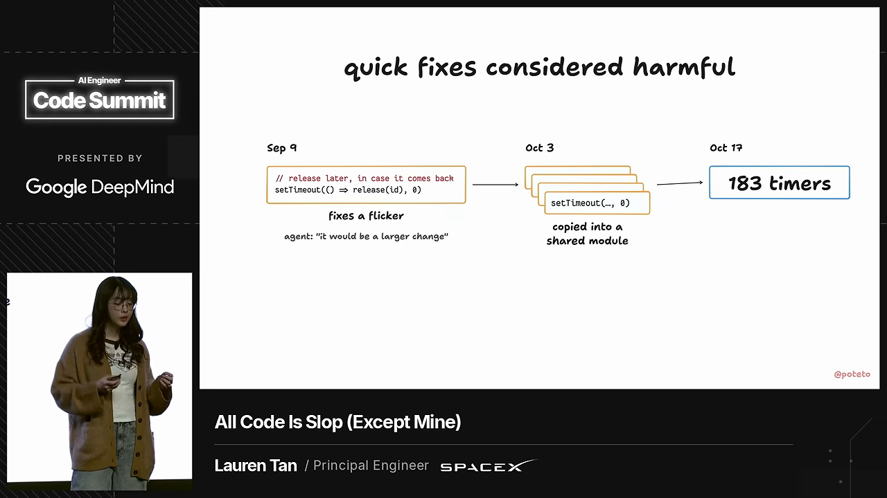

從單兵 AI 輔助到規模化軟體工廠：如何讓 Agent 每月交付萬個 PR 卻零垃圾？
講者：Lauren Tan (Potato) · 前 Cursor 工程師 / xAI Grok Bot 團隊
本簡報由 LLM Wiki 知識庫即時驅動生成
• 追求手寫代碼的打字速度與產出量
• 人工手動進行逐行 Code Review
• 將品質寄託在工程師的個人專注力
• 打造能約束與引導 Agent 的高信任環境
• 在代碼量暴增的同時，維持甚至提升系統品質
• 核心瓶頸從「產能」轉為「信任與驗證」
• 代碼庫（Codebase）是 Agent 最大、最直接的輸入來源。
• 專案中的任何臨時 Workaround、廢棄寫法或壞味道，都被 Agent 視為標準範式並瘋狂複製！
• 雜草若不清除，幾天內就會淹沒整座花園。
• 工程師的工作本質正變成園丁：維護土壤純淨，並為藤蔓架設鋼筋混凝土支架（Constraints）！
面積越寬代表投入的工程心力越多，由上而下逐層過濾：
• 痛點：Agent 不具備細膩心智模型，濫用 useEffect 引發狀態無限重渲染。
• 解法：在產品代碼中全面禁用（Ban）useEffect，僅允許在底層框架內調用，徹底消除審查負擔！
• 痛點：在 Cursor 開發中，Agent 常常把 Main 執行緒代碼引入 Renderer，導致介面凍結。
• 解法：在檔案目錄設立 electron-main 與 electron-renderer，用 Dependency Linter 直接阻斷跨層引用！
• 逃生門：Agent 遇到難題時，極喜歡加上註解解釋「為什麼自己使用非正規手段」。
• 不可強制執行：註解無法被編譯器檢驗，且會迅速過期（Stale），人類根本沒時間逐行看註解。
• 將不可碰的邊界寫成客製化 Lint 規則。
• 當 Agent 違規時，Linter 輸出詳盡錯誤訊息：「請修復根源問題，嚴禁以此補丁繞過！」

▲ 實戰警示：一行帶有自我合理化註解的 setTimeout，在 5 週內瘋狂繁衍成 183 個定時器！
• 針對複雜協議與並發邏輯進行狀態全空間枚舉驗證。
• 確保系統核心不變量（Safety & Liveness）永不被破壞。
• 使用純數學邏輯證明演算法在全邊界條件下的正確性。
• 讓 Agent 產出的關鍵代碼具備數學級的確定性。
錯誤要越靠近源頭被攔截越好。編譯期報錯 > 運行時崩潰 > 產線出事。
當確定性檢查足夠扎實，人工 Review 清單將歸零，Agent 能安全自動合併 PR。
本簡報僅為核心精華提煉，完整影片逐字稿、時間軸拆解與形式化驗證數學原理，請參閱：